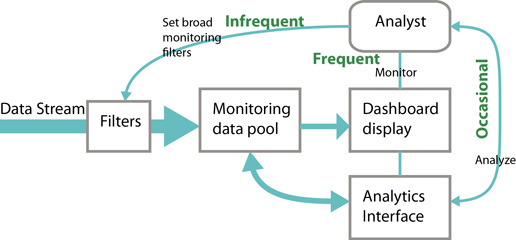

|
VTDP: Monitoring
The term monitoring is used for a set of tasks where an operator is responsible for maintaining a level of awareness of some system, or situation. Monitoring has been studied extensively for the design of control room displays, used with power distribution networks, factory processes, and controls for complex vehicles such as aircraft. Monitoring panels called information dashboards are increasingly used in business. The use of monitoring in visual analytics may require a more flexible, dynamic approach since what is being monitored will more frequently than for these other applications.
Example 1: A business executive uses a dashboard display check recent sales figures by region and aspects of the supply pipeline.
Example 2: A technician in a chemical factor is required to monitor the ongoing state of flow through pipes, pressure levels and various other process parameters to ensure that the plant is performing within defined parameters and that there are no warning signs.
Example 3: An analyst responsible for monitoring the impact of Hollywood productions using Twitter, is expected to report on adverse publicity memes, as well as total volumes and global trends.
An overview of the monitoring process
Display environment: A monitoring panel with various graphical entitites reprenting system variables.
- Set up a cognitive self interrupt schedule.
- When an internal cognitive interrupt occurs, break off from other tasks, save mental state of other tasks. Load monitoring cognitive strategies, and task relevant visual queries .
- Scan display with eye movements executing visual queries appropriate to each display element .
- For actionable patterns found, take required action .
- If no actionable items, partially save cognitive monitoring information and return to other tasks.
|
Characteristics of Monitoring
Dual task and multi-task: Typically monitoring is only one of the responsibilities of a system operator, executive, or analyst. In their monitoring activity analysts are expected to maintain an ongoing alertness for new developments, or critical situations, but they typically have an ongoing workload of other tasks. Because of this monitoring is intermittent and cognitive costs are incurred during task switching [1].
Exceptions: Changes to the status quo are often especially important in monitoring. Sometimes there are designated trigger values that require specific actions. For example, a specified drop in pulse rate or blood pressure in a patient being monitored may result in an alarm requiring actions by medical staff.
Trends and emerging patterns: Operators and analysts are also expected to be aware of general trends usually of a number of variables, and also emergent patterns in the data.
Links to actions: The goal of monitoring is to enable people to take appropriate actions as a result of exceptions, trends and emerging patterns. Taking action is another form of task switching with attendant cogntive costs.
Vigilance: Certain kinds of monitoring constitute what are called vigilance tasks. These are prolonged, monotonous, visual search tasks where a rare and often weak signal may have disastrous consequences if missed.

Displays and Interactions:
In a discussion of the requirements for business information dashboards Few [2] argues strongly that they should be single screens, with critical visible to facilitate the monitoring task. In other words interaction should not be required to access monitored variables.
Display Guideline: Provide a single unobscured screen to support essential monitoring tasks. Interaction should not be required to get at key information.
Monitoring in the analytics world is a different case, because the switch to analysis is likely to be essential. In analytics there are commonly three major types on interaction with the system as illustrated above. Typically analytics is based on a set of analyst customized filters to pull out information of interest. As analytics tasks evolve these filters must be changed to meet new requirements, althought the changes must be infrequent enough to allow a time series to be accumulated (so that noramative trends exist against which exceptions can be tested). Montitoring itself will be much more fequent, occuring at intervals from a few minutes to a few hours. Of intermediate frequency is a switch to analysys. Supporting this in a fluid way is essential in analytics because only minimal informatin about emergent trends will be typically available on the screen and this may be of low quality, necessitation drill down operations on many pieces of information for everything that is actionable. The three kinds of interaction are summarized in the process diagram shown above.
Interaction Guideline : For analytics monitoring support rapid transitions to analytics mode (Drill down VTDP). Ideally this should not resulting in key monitoring elements being hidden. A second screen for more intense analytics is desirable.
Visual Scent Guideline: Maximize the visual coding of variables if users will work extensively with the system and can be expected to learn the symbol system, or where already learned visual symbols exist. For fixed control room displays it is reasonable for users to learn the semanitics of every dial, analytics Otherwise coding using words will often be the best option.
Visual Queries Regarding Change: Optimize graphical displays for visual queries regarding change and trends in underlying data. Time series representations are often important but they must be carefully designed to show critical threshold variables.
User interrupt Guideline: Research shows that people are more sensitive to movement in the periphery of vision than to, for example color. This means that using motion or blinking for alerts is usually a good solution [3].
References
- Trafton, J. G., Altmann, E. M., Brock, D. P., & Mintz, F. E. (2003). Preparing to resume an interrupted task: Effects of prospective goal encoding and retrospective rehearsal. International Journal of Human-Computer Studies, 58(5), 583-603.
- Few, S. (2013) Information Dashboard Design. Analytics Press.
-
Bartram, L., Ware, C., & Calvert, T. (2003). Moticons:: detection, distraction and task. International Journal of Human-Computer Studies, 58(5), 515-545.
.
|